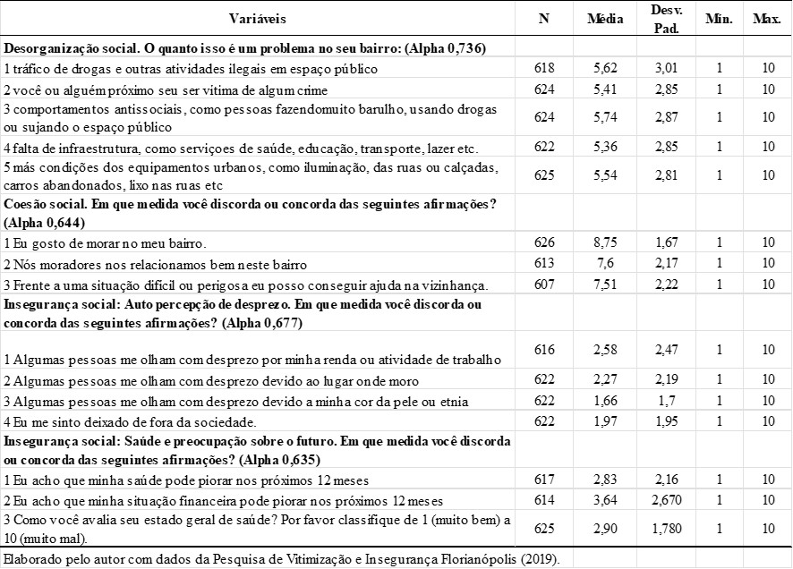
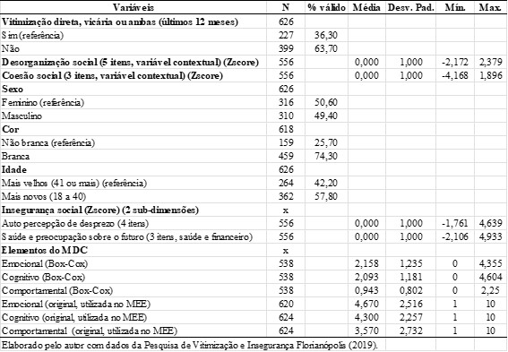
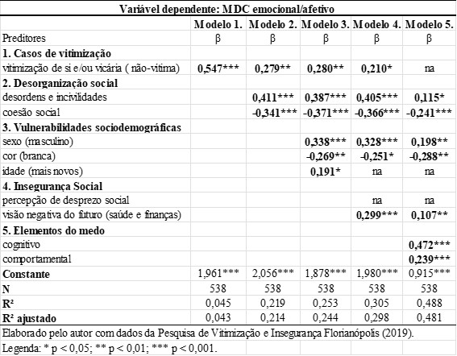
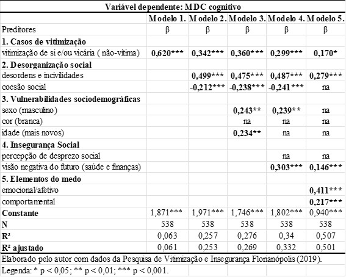
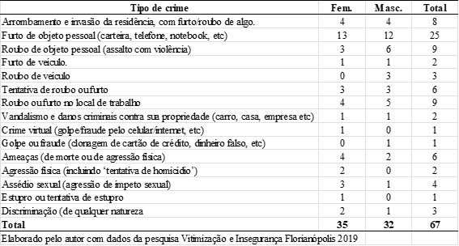
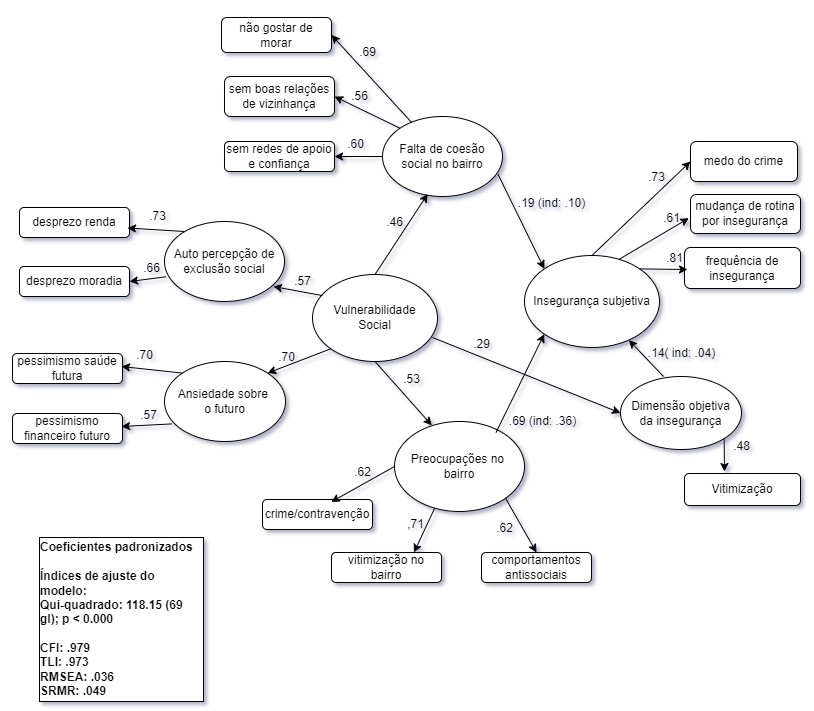
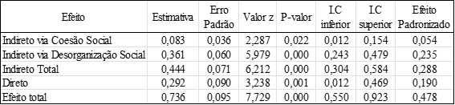

Resultados e Discussão
Neste capítulo serão apresentados os resultados das análises realizadas a fim de testar as hipóteses de pesquisa, os quais serão discutidos em relação ao conjunto teórico apresentado. A questão geral a ser respondida paralelamente às hipóteses e após os testes é: a insegurança social, tal como caracterizada neste estudo, é um elemento importante ao estudo do MDC?
Começaremos com um breve contexto da pesquisa, apresentando a cidade de Florianópolis/SC em relação ao tema da violência e insegurança. Depois, retomamos a apresentação das hipóteses de estudo e dos resultados esperados, tal como apresentado no Capítulo 1. Em seguida, tem-se a descrição das variáveis utilizadas, o resultado discussão da regressão linear e, por fim, discutiremos os outputs das modelagens de equações estruturais.[1]
Contexto de crime e medo em Florianópolis/SC
Agora trataremos a respeito da cidade em que este estudo foi realizado, Florianópolis, a capital e a segunda maior cidade em população do estado de Santa Catarina. Florianópolis está situada quase totalmente em uma ilha, com uma pequena parte continental. A cidade completou 349 anos de fundação em 2022, quando possuía pouco mais de 537 mil habitantes, somadas as populações da parte insular e continental da cidade. Em 2010, o Índice de Desenvolvimento Humano Municipal (IDHM) da cidade era de 0,847, um dos mais altos do país[2].
Santa Catarina por anos esteve entre os estados com a menor taxa de homicídios do país, e em 2010 figurou com a menor taxa do Brasil. Agora, em 2024, novamente o estado figurou como o mais seguro do Brasil[3], e Florianópolis como a capital mais segura do país, com a menor taxa de homicídios por 100 mil habitantes[4]. No entanto, entre as demais cidades de Santa Catarina com mais de 100 mil habitantes, Florianópolis ocupou a oitava posição entre as mais violentas de 2024, considerando a taxa de homicídios[5].
Porém, a taxa bruta diz pouco sobre a realidade da violência letal no estado, por um lado, porque oculta a trajetória de crescimento do indicador no estado desde os anos 80 e, por outro, porque não esclarece as várias desigualdades municipais e societais ligadas ao fenômeno dos homicídios (Monteiro, 2021).
Em 2017, Florianópolis superou o recorde de registro de homicídios alcançado pelo país em 2016, registrando 30,3 homicídios para cada cem mil habitantes, uma das taxas mais altas do Brasil (Monteiro, 2019). Uma das características peculiares desse tipo extremo de violência na cidade é a alta concentração espacial. Entre 2011 e 2017, 50% dos homicídios e roubos de rua ocorridos na cidade se deram em 0,4% e 1,3% dos segmentos de rua da cidade, respectivamente. Além de desigualmente distribuído, com alta concentração criminal em poucos espaços, há estabilidade dessa distribuição no intervalo de tempo estudado, em relação aos crimes de roubo de rua e homicídios entre 2011 e 2017.
O começo da década de 2010 foi marcado diversos acontecimentos envolvendo a segurança pública no estado, e Florianópolis é uma das cidades que figurou entre as envolvidas. Reformas no sistema prisional do estado geraram eventos que apontaram para um problema até então ignorado, ao menos publicamente, pelas forças de segurança: o crime organizado. Tal qual como nos estados de São Paulo e Rio de Janeiro, entre outros, grupos que se espalham pelo estado e estão atrelados ao sistema prisional. Seja pela possibilidade política de cooptar novos integrantes, seja pelo fato que muitos dos “líderes” estavam encarcerados no sistema prisional estadual.
Em 2012 e em 2013, a cidade foi palco de atentados criminosos com ataques a agentes e estruturas da Segurança Pública estadual, com queima de ônibus e veículos diversos, bloqueio de vias públicas e confrontos que culminaram em mortes (Valente, 2019). Isso ocorreu novamente na cidade outras vezes, porém em menor magnitude. Além disso, a cidade exibe uma taxa crescente dos indicadores de letalidade policial[6], evidenciando aspectos da violência que escapam às explicações provenientes da observação à taxa de homicídios.
Sobre o medo do crime, não há dados disponíveis sobre qualquer indicador a respeito do tema, e não se tem estudos suficientes para produzir um quadro básico de informações. Uma pesquisa sobre o tema foi realizada em seis municípios de Santa Catarina, Florianópolis, Joinville, Criciúma, Chapecó, Lages e Balneário Camboriú, envolvendo uma amostra total de 666 casos (Santos Júnior et al., 2007). Desse total, 172 entrevistas foram aplicadas em Florianópolis. O questionário possuía 19 questões sobre “preocupação” das pessoas com diversos crimes ou contravenções, contra a pessoa e propriedade. Os resultados são descritivos e apontam diferenças e semelhanças entre as amostras de cada cidade. No entanto, o estudo não abordou a vitimização, vulnerabilidades ou desorganização social de maneira direta, e os resultados não foram apresentados com recortes de sexo/gênero, raça ou status socioeconômico.
Além do estudo citado acima, não foram encontradas informações ou dados sobre o tema no município que possibilitasse comparação ou discussão dos resultados, o que oferece mais um desafio a este estudo, ao mesmo tempo em que aponta para um certo grau de originalidade e relevância da pesquisa que embasa esta tese. A seguir, retoma-se a apresentação dos objetivos e hipóteses de pesquisa, tal como apresentado ao final do Capítulo 1.
O objetivo subjacente da tese foi verificar se a insegurança social, tal como caracterizada nesta pesquisa, é um conceito importante para os estudos do MDC. De maneira específica, a pesquisa envolveu verificar se duas facetas distintas, mas relacionadas à insegurança social têm capacidade explicativa sobre o medo do crime. Primeiramente, verificando a magnitude da insegurança social enquanto um preditor do medo e, depois, investigando de que maneira a insegurança social afeta o MDC de maneira direta e indireta, através da combinação com outros elementos já conhecidos nos estudos teóricos e empíricos anteriores. Neste sentido, a pesquisa não deixou de considerar fatores importantes presentes no campo de estudos do tema, como a vitimização criminal, desorganização e coesão social, e aspectos sociodemográficos.
As seguintes hipóteses nortearam o estudo quanto ao objetivo geral e específicos:
H1: a insegurança social afeta o medo do crime, servindo como preditor relevante;
H2: a insegurança social terá efeitos distintos sobre cada um dos elementos do MDC;
H3: a insegurança social afeta a dimensão “afetiva” do medo em maior grau, reforçando o argumento da insegurança enquanto “ansiedade difusa”;
H4: os três elementos do MDC têm relações recíprocas, sendo preditores uns dos outros;
H5: o efeito da insegurança social sobre o MDC segue caminhos distintos, sendo mediado por aspectos ambientais de vizinhança;
H6: a insegurança social exerce efeito direto sobre o MDC;
H7: a desorganização social (desordens estruturais e incivilidades no bairro) media a relação entre insegurança e medo, amplificando sua magnitude;
H8: a coesão social media a relação entre insegurança e medo, reduzindo seu impacto.
Em suma, espera-se encontrar evidências que corroborem para a aceitação de todas as hipóteses investigadas. A seguir apresenta-se estritamente os resultados das análises, iniciando com a descrição das variáveis utilizadas, depois o resultado discussão da regressão linear e, por fim, os outputs das modelagens de equações estruturais.
Na Tabela 1, é apresentada a descrição das variáveis utilizadas para a análise de componentes principais (ACP), a qual validou a criação dos quatro fatores: desorganização, coesão, percepção de desprezo e ansiedade. Eles são mensurados através de scores fatoriais em padronização Z, e representam quatro dimensões preditoras do MDC.
Tabela 1 – Descrição das variáveis utilizadas na análise fatorial por componentes principais (ACP)

A seguir, na Tabela 2 constam as variáveis utilizadas nos modelos de regressão linear múltipla:
Tabela 2 – Descrição das variáveis utilizadas nos modelos de regressão linear

Foram produzidos três modelos de regressão, cada um com uma variável dependente diferente, referentes aos 3 elementos do medo: emocional, cognitivo e comportamental. Por apresentarem ligeira assimetria em sua distribuição, foi realizado o procedimento de normalização de Box-Cox com as três variáveis dependentes visando aproximar a distribuição dos termos de erro (resíduos) da normalidade.
No entanto, ao avaliar o resultado do teste de Shapiro-Francia (para normalidade dos resíduos) de cada um dos três modelos gerais (emocional, cognitivo e comportamental), nenhum dos três passou no teste quando inserido o último conjunto de preditoras (Modelo 5). Embora a transformação Box-Cox tenha melhorado os resultados dos testes, estes ficaram próximos do esperado (p-valor > 0,05), mas não o alcançaram, conforme pode ser observado no Apêndice 4. Este foi o único teste com resultados abaixo do esperado e a razão principal é a presença de outliers. Mesmo assim manteve-se a base sem exclusão dos outliers, sabendo-se que os valores de p do teste F podem não ser exatos. A etapa da MEE vai mostrar que os parâmetros das regressões foram adequados para construção dos intervalos de confiança, validando a capacidade preditiva dos modelos.
Cada um dos três modelos foi estimado pelo método Stepwise a partir da inserção do segundo conjunto de preditores, os quais foram inseridosde forma hierárquica. São ao todo cinco blocos em que os cinco conjuntos de preditores foram inseridos gradualmente em cada um dos três modelos, e nas tabelas com os resultados constam as correlações estatisticamente significativas (p≤ 0,05) das variáveis mantidas em cada modelo. As variáveis excluídas pelo método Stepwise foram substituídas por “na” nas tabelas. Os modelos de regressão visam testar as hipóteses de H1 até H4.
No Modelo 1 (Casos de vitimização) foi inserida a variável vitimização de si e/ou vicária, de tipo dummy, sendo a variável de referência as ‘vítimas’. No Modelo 2 (Desorganização social) foram inseridos dois construtos criados com ACP, desordens e coesão social. O Modelo 3 (Vulnerabilidades sociodemográficas) adicionou variáveis referentes a sexo/gênero, cor/raça e idade. As três variáveis são binárias e as categorias de referência são feminino, cor não branca e mais velhos. No Modelo 4 (Insegurança social) foram adicionados dois construtos resultantes da ACP, percepção de desprezo social e visão negativa sobre o futuro. Por último, a fim de verificar relações recíprocas entre os elementos do medo do crime, no Modelo 5 foram adicionadas os outros dois elementos do MDC, porém, como variáveis preditoras. Estão em sua escala transformada por Box-Cox.
Abaixo, no Gráfico 1 apresenta-se o gráfico de valores preditos da variável MDC emocional em sua escala transformada por Box-Cox, em relação às duas dimensões da insegurança social.
Gráfico 1 – Valores preditos da variável MDC emocional

Pelo gráfico nota-se ausência de relação entre MDC emocional e percepção de exclusão social, e uma relação positiva e bem clara entre MDC emocional e a variável preocupação com futuro. Nos dois casos o intervalo de confiança é bem estreito, mostrando uma relação bem definida em dado intervalo de confiança. Na Tabela 3, apresenta-se os preditores do elemento emocional do medo do crime (insegurança ao andar sozinho(a) no bairro, à noite).
Tabela 3 – Resultados das regressões lineares realizadas para os preditores do MDC, elemento emocional (insegurança ao andar sozinho(a) no bairro, à noite (n=538)

O Modelo 1 mostra a vitimização como um preditor do medo do crime em seu elemento emocional. De todos os preditores, a vitimização no Modelo 1 exibe o coeficiente estatisticamente significativo de maior valor, revelando a magnitude do efeito de ter sido vítima sobre o sentimento de segurança ao andar sozinho(a) nas ruas à noite. Esse preditor preserva alguma intensidade e significância até o modelo 4, porém não entra no modelo quando inseridos os outros elementos do MDC, no Modelo 5.
No Modelo 2 (desorganização social) tanto a percepção de desordens e incivilidades, quanto a coesão social apontam para a importância dos fatores contextuais na predição do MDC. Como se observa, percepção de desordens e incivilidades no bairro correlacionam-se a um aumento no aspecto emocional do medo, de forma intensa e significativa, perdendo intensidade apenas no Modelo 5.
Quanto à coesão social no bairro, observa-se um fenômeno semelhante, mas no sentido inverso, revelando uma correlação presente na literatura. Enquanto a desorganização leva a um aumento do medo, a coesão serve como um elemento que mitiga efeitos negativos do medo, apontando que relações de confiança e ajuda mútua no bairro podem predizer um medo reduzido quanto ao andar pelo bairro sozinho(a) à noite. Ambos os preditores do modelo da desorganização social (desordens e coesão) mantém significância estatística até o Modelo 5.
Os preditores sociodemográficos foram inseridos no Modelo 3, e tanto o sexo quanto a cor mostraram-se estatisticamente significativos do Modelo 3 ao 5, e a idade apenas no Modelo 3, sendo excluída nos modelos 4 e 5. Quanto ao sexo/gênero, indica um medo emocional positivo e intenso entre as mulheres, conforme amplamente verificado em pesquisas sobre MDC. Quanto à cor o resultado foi um tanto inesperado, pois os coeficientes foram moderados e significativos, porém negativos. Considerando a variável de referência para a cor ‘não branca’, o resultado prediz um menor medo ao andar sozinho(a) pelo bairro à noite entre as pessoas de cor ‘não-branca’. Quanto à idade, o coeficiente foi estaticamente significativo apenas no Modelo 3, apontando uma maior probabilidade de medo emocional entre as pessoas mais velhas (41 anos ou mais). No entanto, quando inseridos os preditores de insegurança social e os demais elementos do medo, a idade perde intensidade e significância.
No Modelo 4 foram inseridos os preditores alvo de nosso foco principal neste estudo, percepção de desprezo social e visão negativa sobre o futuro. Esse segundo construto serve como uma medida proxy de “ansiedade difusa”, e é justamente essa medida que revela uma correlação estatisticamente significante nos Modelos 4 e 5, embora perca intensidade no Modelo 5. A percepção de desprezo não permaneceu no modelo do medo emocional.
Por fim, no Modelo 5 nota-se a importância dos demais elementos do MDC para o modelo, sendo que tanto o elemento cognitivo quanto o comportamental têm correlações estatisticamente significativas com o medo emocional, sendo maior a intensidade com o elemento cognitivo. Além disso, o R² ajustado passa de 29,8% (Modelo 4) para 48,1% no Modelo 5.
Em um resumo geral, vitimização, desordens e coesão, vulnerabilidades de sexo e cor, ansiedade sobre o futuro, e os demais elementos do medo mostraram-se como importantes preditores do elemento emocional do MDC. Cabe apontar que esse conjunto de regressões é revelador de algumas correlações presentes na literatura sobre o tema do MDC e sua relação com vitimização. Embora o sexo tenha se mostrado um preditor do medo emocional, isso pode não ser devido à vitimização, já que o número de mulheres vítimas é apenas 3% maior que homens. Pessoas de cor não-branca foram vítimas tanto quanto as brancas e, entre as vítimas, os mais novos são 10% mais vítimas que os mais velhos. Isso revela a independência relativa entre crime e medo, e reforça o peso do contexto, das vulnerabilidades a da “ansiedade difusa” sobre o elemento emocional do MDC.
Abaixo, no Gráfico 2 apresenta-se o gráfico de valores preditos da variável MDC cognitivo em sua escala transformada por Box-Cox em relação à insegurança social (duas subdimensões).
Gráfico 2 – Valores preditos da variável MDC cognitivo

O gráfico de regressão mostra um resultado muito parecido que o encontrado anteriormente com o MDC emocional, com apenas uma subdimensão bem relacionada ao MDC e com os termos de erro bem definidos. Na Tabela 4, apresenta-se os resultados das regressões lineares com o elemento cognitivo do medo como variável dependente.
Tabela 4 – Resultados das regressões lineares realizadas para os Preditores do MDC, elemento cognitivo (frequência da insegurança no bairro) (n=538)

Como se pode observar na Tabela 4, a vitimização mostra-se um preditor intenso e estatisticamente significativo do medo cognitivo nos cinco modelos, demonstrando que o fato de ter sido vítima pessoalmente e ou de maneira vicária recentemente (último ano) correlaciona-se à uma maior frequência de sentimento de insegurança no bairro. Nossa variável sobre o local da ocorrência de vitimização só contabilizou os casos de vitimização direta e dupla (n=69), por isso há muitos valores ausentes, o que não nos permite verificar com maior rigor se a insegurança no bairro é maior entre os que foram vítimas no próprio bairro. Entre os que foram vítimas diretas e duplas (n=69), 65% passaram por vitimização no bairro onde moram.
No Modelo 2 pode-se verificar o impacto e a significância da desorganização social sobre o medo cognitivo. Desordens e incivilidades se correlacionam de maneira intensa e estatisticamente significativa do Modelo 2 ao 5, perdendo ou pouco de intensidade no último modelo. Já a coesão social perde significância no Modelo 5, quando são inseridos os demais elementos do MDC. Mesmo assim, do Modelo 2 ao 4 a coesão produz um impacto negativo sobre o medo, servindo como um ‘amortecedor’ para a frequência de insegurança no bairro.
O Modelo 3 mostra um resultado bem diferente do que encontrado nas regressões com o medo emocional enquanto dependente. Sexo e idade mostram-se preditores importantes no Modelo 3, e apenas o sexo no Modelo 4. No Modelo 5 nenhuma variável de vulnerabilidade sociodemográfica mostrou-se significativa. Isso indica que embora tais vulnerabilidades podem estar correlacionadas ao medo em andar só pelo bairro à noite, isso não ocorre em relação ao aumento da frequência geral de medo no bairro.
O Modelo 4 mostra mais uma vez a importância da dimensão “Insegurança social” na predição do medo do crime, embora apenas a sub-dimensão visão negativa sobre o futuro tenha sido significativa. Preocupar-se com o próprio futuro próximo (próximo ano) em termos financeiros e de saúde, assim como ter uma má percepção da saúde atual relacionam-se a um aumento na frequência de insegurança no bairro. Perceber-se socialmente desprezado, deixado de lado, não produziu esse efeito. Assim como no conjunto de regressões da Tabela X, “ansiedades difusas” pouco usuais nas pesquisas de MDC mostraram-se como bons preditores.
O último bloco de variáveis preditoras foi adicionado no Modelo 5 e tanto o elemento emocional quanto o cognitivo revelaram-se preditores estatisticamente significativos do medo do crime cognitivo. E mais uma vez, a importância da inclusão desses preditores é reforçada através de um aumento de 33,2% para 50,1% do R² ajustado.
Esse segundo conjunto de regressões abordou os preditores do aspecto cognitivo do medo (frequência de insegurança no bairro) e pôde-se verificar a importância da vitimização, do contexto quanto às desordens e incivilidades, da ansiedade difusa e dos demais elementos do medo (emocional e comportamental) sobre a frequência de insegurança no bairro. A seguir apresenta-se o último conjunto de regressões lineares, o qual tem como variável dependente o aspecto comportamental do MDC.
No Gráfico 3 a seguir apresenta-se o gráfico de valores preditos da variável MDC comportamental em sua escala transformada por Box-Cox, em relação às duas dimensões da Insegurança Social.
Gráfico 3 – Valores observados e preditos da variável MDC comportamental

Nota-se pelo Gráfico 3 que mais uma vez a variável Preocupação com o futuro relaciona-se de maneira positiva com o MDC, com a diferença que a Percepção de exclusão também apresenta esse resultado em relação ao MDC comportamental. Somente a medida de MDC comportamental apresentou relação positiva com os dois elementos da Insegurança social.
Na Tabela 5 são apresentados os efeitos dos preditores sobre o elemento comportamental do MDC, que representa a frequência que as pessoas alteram rotinas ou mudam planos para evitar situações que as deixam inseguras em seus bairros de moradia.
Tabela 5 – Resultados das regressões lineares realizadas para os preditores do MDC, elemento comportamental (frequência de mudança de rotina devido à insegurança) (n=538)

O Modelo 1 mostra a vitimização correlacionada a um aumento do medo comportamental, com grande magnitude e estatisticamente significante. No entanto, esse efeito reduz quando inseridas as variáveis contextuais (Modelo 2), e assim se mantém até o modelo 4. No modelo 5 a vitimização deixa de ter significância. Em relação ao MDC comportamental, a vitimização pessoal, de si e/ou dupla mostrou-se importante preditor para os modelos 1 a 4, indicando a diferença marcante entre aqueles que foram vítimas quanto à mudança de comportamento ou rotina para evitar sentir-se inseguro.
No Modelo 2, mais uma vez, o contexto mostra sua relevância enquanto preditor do medo, apresentando resultados muito semelhantes aos verificados na Tabela Y (medo cognitivo). Desordens e incivilidades estão correlacionadas ao aumento da frequência de mudança de rotina devido à insegurança em todos os modelos, enquanto a coesão social no bairro relaciona-se com a diminuição desse comportamento. Porém, no Modelo 5 a coesão perde magnitude e significância estatística frente à presença de outras variáveis.
Quanto as vulnerabilidades, o preditor sexo mostrou-se significativo apenas no Modelo 4, e a idade nos Modelos 3 a 5. Nesses casos significativos, tanto as mulheres quanto os mais velhos apresentam chances maiores de ter comportamentos restritivos em função da insegurança no bairro. Nota-se que a idade revelou uma relação intensa com o MDC comportamental, apontando as chances de ocorrer que as pessoas alterem suas rotinas devido a insegurança é muito maior entre os mais velhos. Mais uma vez, uma variável sociodemográfica revela-se melhor preditor para o MDC que a vitimização, considerando que na amostra, entre as vítimas, 63,9% são mais novos e 36,1% mais velhos.
O Modelo 4 confirma a dimensão da Insegurança Social como realmente importante na predição do medo do crime. Tanto o construto de percepção de desprezo quanto a coesão social mostraram-se positivos e estatisticamente significativos em relação ao medo comportamental. Pela primeira vez, o construto de percepção de desprezo social correlaciona-se ao medo, porém, em menor intensidade e significância que o construto de ansiedade em relação ao futuro. Este último, por sua vez, mostra praticamente o mesmo efeito sobre o elemento comportamental quanto mostrou com os demais elementos.
Finalizando, o Modelo 5 mostra novamente a importância dos demais elementos de mensuração do medo, o que aponta para a relevância em se considerar o MDC enquanto um fenômeno multifacetado, e como suas facetas têm relações entre si como fossem sub fenômenos que “andam juntos”, correlacionam-se ou associam-se, de maneira que a ocorrência de um pode prever a de outros. Novamente, a inclusão dos demais elementos resultou em um incremento do R² ajustado, passando de 22,1% para 30,4% no Modelo 5.
A seguir, na Tabela 6, são apresentados os sentidos dos efeitos das variáveis preditoras que mostraram relação estatisticamente significativa (p < 0,05), nos três conjuntos de regressões, nos Modelos de 3 a 5. Registrou-se os Modelos de 3 a 5 para comparação dos efeitos entre os modelos que incluíram variáveis de vitimização, de contexto e vulnerabilidades (3), com o modelo da insegurança social (4) e o que incluiu os demais elementos.
Tabela 6 – Preditores estatisticamente significativos e sentido do efeito nos três elementos do MDC (Emocional, Cognitivo e Comportamental)

Legenda: + : relação significativa positiva; - : relação significativa negativa; espaço vazio: ausência de significância estatística na relação; — : variável não presente no modelo.
Como se pode observar, a vitimização mostrou efeito positivo sobre os três elementos do MDC, mais presente em relação ao elemento cognitivo, no emocional, e por último no comportamental. A vitimização perde significância no modelo emocional quando são inseridos os outros elementos do medo, e no modelo comportamental a vitimização não produz efeito frente a inclusão das variáveis de insegurança social e os demais elementos.
As regressões reforçam achados de outros estudos que indicam que a vitimização, direta ou indireta, terá algum impacto sobre a insegurança (Dammert; Tobar, 2018; Farrall; Gray; Jackson, 2007; Hernández, 2019; Natal; Oliveira, 2021; Rountree; Land, 1996; Soares, 2008; Trindade; Durante, 2019). No entanto, em relação ao sexo e vitimização, embora este tenha se mostrado um preditor importante do medo emocional, talvez a diferença por sexo não seja explicada apenas pela vitimização, mesmo que o número de mulheres vítimas tenha sido 4,4 % acima dos homens.
A Tabela 7, abaixo, apresenta os valores absolutos da vitimização por diferentes crimes em recorte de gênero. Foram contabilizados apenas os casos de vitimização pessoal (a própria pessoa foi vítima) ou dupla (a própria pessoa e alguém próximo foram vítimas). Não constam as vítimas indiretas/vicárias, que se trata de pessoas que tiveram alguém próximo que foi vítima (n=158):
Tabela 7 – Distribuição das frequências relacionadas a vitimização por diferentes crimes estratificados por gênero (n=626)

A dissociação entre vitimização e medo é algo verificado há tempos (Dammert; Tobar, 2018; Soares, 2008) e quando pensada pela intersecção de sexo/gênero, traz à tona a questão que o medo feminino, muitas vezes, está mais relacionado à percepção de vulnerabilidade (sociodemográfica) que à vitimização, muitas vezes ampliada pelo medo de ser vítima de crimes de cunho sexual (Pain, 2000). Os autores Jackson (2009) e Hale (1996) já destacaram como essas vulnerabilidades podem amplificar o medo do crime, independente das taxas objetivas de criminalidade ou da vitimização. Como se pode notar na Tabela 7, a maior diferença entre as ocorrências se dá entre crimes violentos e de cunho sexual, os quais recaíram mais entre as mulheres.
A percepção de desordens e incivilidades produziu efeitos positivos sobre os três elementos do medo, e em todos os modelos registrados. Somente as variáveis do modelo 5 produziram efeitos tão amplos. A coesão social apresenta efeito negativo nos três modelos da dimensão emocional, mas no elemento cognitivo e emocional, perdeu significância frente à adição dos demais elementos. Os resultados indicam que a percepção de desordens (como pichações, acúmulo de lixo, falta de infraestrutura, e presença de pessoas em comportamentos antissociais) e a ausência de coesão social estão positivamente correlacionadas com o aumento do medo do crime.
Os resultados apontam que, nos contextos em que os laços de confiança entre os moradores são mais fortes, o medo tende a reduzir. O estudo de Costa e Durante (2021) reforçou essa ideia, mostrando que vizinhanças com forte coesão social e relações de confiança entre vizinhos experienciam menos medo, mesmo em contextos de alta criminalidade.
O preditor sexo mostrou efeito em todos os modelos registrados no elemento emocional do medo, perdendo significância no modelo cognitivo quando inseridos os demais elementos, e mostrou efeito apenas no modelo 4, quando em relação à dimensão comportamental. A cor mostrou efeitos apenas sobre o elemento emocional do medo nos três modelos. A idade mostrou-se um preditor importante na dimensão comportamental do medo, e menos importante em relação ao elemento emocional e cognitivo. Esses achados indicam que vulnerabilidades sociodemográficas são preditores relevantes do medo do crime.
O sexo, é um dos principais determinantes, uma conclusão que é amplamente sustentada pela literatura do MDC (Hale, 1996; Pain, 1995; Trindade; Durante, 2019). A vulnerabilidade do sexo feminino, conforme já discutido, pode ser associada à percepção de risco de vitimização sexual ou mesmo de outras violências que recaem contra a mulher justamente pelo gênero, como o feminicídio no Brasil, amplamente perpetrado por pessoas muito próximas/intimas das vítimas.
Além disso, as vulnerabilidades raciais e etárias também desempenham um papel fundamental enquanto preditores do MDC. Embora revelado que pessoas de cor não-branca predizem um menor medo emocional, neste levantamento estas foram vítimas tanto quanto as brancas. É possível que fatores como o contexto de desordens sociais ou a coesão social tenham mediado essa relação, conforme sugerido por Hale (1996), levando a uma menor insegurança ao andar só pelas ruas do bairro onde vive, à noite. Sobre a faixa etária, foi encontrado maior medo comportamental entre os mais velhos, achado também presente na literatura, que indica que indivíduos com pior saúde física e/ou mental podem sentir-se mais vulneráveis e, portanto, experimentar níveis mais elevados de medo independente de sua experiência direta com vitimização (Jackson, 2009). No presente estudo, os mais velhos tendem a mudar mais suas rotinas a fim de evitar situações que lhes gerem insegurança.
Por último, as análises de regressão confirmam a relevância das duas subdimensões da insegurança social aos estudos do MDC, principalmente o construto ansiedade ou preocupação sobre o futuro. Nos três modelos o ganho explicativo observado a partir da contribuição ao R² ajustado é considerável. Sobre os preditores, apenas a preocupação com o futuro revelou efeitos sobre os três componentes do medo de maneira consistente. O desprezo social mostrou-se relacionado apenas à dimensão comportamental do medo. Ainda, as três dimensões elementares do MDC mostram-se em relações recíprocas, servindo como importantes preditores umas das outras.
Em geral, as regressões indicam que as três dimensões do medo do crime são influenciadas pela insegurança social. No entanto, a subdimensão visão negativa do futuro, teve papel mais generalizado. Em grande medida, isso pode ser entendido enquanto uma relação entre “ansiedades difusas” e MDC, já que reflete como uma má avaliação da saúde e perspectivas ruins sobre o futuro levam à maior percepção de insegurança em relação ao crime conforme Valente e Pertegas (2019). Tanto o desprezo social e a preocupação sobre o futuro indicam que a insegurança social pode ser entendida como uma variável proxy de ansiedades difusas, sendo que seu efeito não se limita ao elemento emocional do medo tal como caracterizado neste estudo, influenciando em distintos graus os três elementos do MDC. Esses resultados são semelhantes a outros já verificados, nos quais o medo do crime pode ser amplificado por ansiedades generalizadas que não se relacionam diretamente com a criminalidade ou vitimização, mas com a percepção de vulnerabilidade social e econômica (Chadee et al., 2008; Gray et al., 2008).
Em seguida, apresenta-se os resultados e discussão das análises de Modelagem de Equações Estruturais. A etapa da MEE foi implementada para aprofundar os achados das regressões lineares de maneira a reforçá-los ou rechaçá-los. Considerando que o teste de independência dos resíduos (Shapiro-Francia) resultou um valor que nos leva a desconfiar do valor da significância do teste T para cada variável preditora, a MEE serve como uma avaliação de robustez dos resultados das regressões. Além disso, a MEE aplica a análise fatorial confirmatória e as regressões simultaneamente, mas sem depender dos ajustes de linearidade das variáveis dependentes de medo do crime. E de maneira geral, a MEE permite avançar na análise entre insegurança social e medo, apresentando, além do efeito direto, os mecanismos de atuação da insegurança sobre o medo. Com a MEE, testa-se os efeitos mediadores de variáveis contextuais sobre a insegurança e o impacto desta sobre o MDC, sendo estes os principais mecanismos causais do medo do crime a serem investigados e testados com a modelagem de equações estruturais.
Foram produzidos três modelos respaldados por três esquemas teóricos diferentes, mas que, em comum, contam com a dimensão da insegurança social como preditor que hipoteticamente afeta o MDC, de maneira direta e/ou indireta. Um modelo foi nomeado ‘modelo V’, pois levou em consideração o trabalho de Valente, Pertegas e Olmos (2019). Esse modelo é diferente dos demais pois o construto “vulnerabilidade social” é composto por duas subdimensões um pouco mais simples que os demais, envolvendo menos itens. Além disso, os efeitos dos preditores são testados em relação ao construto “insegurança subjetiva”, e não em relação aos itens (subdimensões) que o compõem.
Outro, o ‘modelo N’, que utilizou como base a pesquisa de Natal e Oliveira (2021), é diferente dos demais pois os efeitos dos preditores, incluindo a Insegurança social, são testados em relação aos componentes do MDC individualmente, não havendo um construto latente de MDC.
E o terceiro é o modelo desenvolvido para esta tese, ‘modelo S’, o qual combina elementos dos dois anteriores. Além de também conter a Insegurança social enquanto preditor, testa-se os efeitos diretos e indiretos da insegurança sobre o construto de MDC, além de testar as relações entre variáveis explicativas e os componentes elementares do medo (emocional, cognitivo e comportamental).
A seguir apresenta-se os diagramas de caminhos de cada MEE, com os valores dos coeficientes de regressão padronizados e as cargas fatoriais padronizadas nas setas dos construtos para as variáveis originais. Os construtos são ligados às variáveis originais que apresentaram cargas fatoriais iguais ou maiores que .500 nos três modelos. Também são apresentados os índices de ajuste de cada modelo.
O primeiro é o modelo V, em que procurou-se reproduzir o modelo teórico original de Valente, Pertegas e Olmos (2019) da maneira mais próxima possível, já que a maior parte das variáveis que formam os construtos são as mesmas, assim como os caminhos estimados, conforme a Figura 1.
Figura 1 – Diagrama de caminhos 1: Modelo V, Modelagem de Equação Estrutural com dados do estudo de vitimização realizado em Florianópolis, considerando o realizado por Valente, Pertegas e Olmos (2019)

O modelo V tem como objetivo apresentar a dimensão da vulnerabilidade social e seu efeito sobre a insegurança subjetiva, mediado por outras três dimensões: falta de coesão, preocupações no bairro, e vitimização. A vulnerabilidade social produz efeitos moderados sobre os três mediadores, mas com maior intensidade sobre preocupações no bairro. Quanto aos efeitos indiretos sobre a insegurança, destaca-se aqueles mediados por preocupações no bairro (.36). Via falta de coesão social no bairro o efeito indireto é menor (.10) e, via insegurança objetiva (vitimização), o efeito é quase insignificante (.04).
Nota-se que o efeito indireto da vulnerabilidade social sobre a insegurança subjetiva via preocupações no bairro (.36) é maior que o efeito direto da falta de coesão (.19) e da dimensão objetiva (.14), ficando abaixo apenas abaixo do efeito direto das preocupações no bairro sobre a insegurança (.69).
Este resultado revela um quadro em que uma combinação específica de situações sociais em nível de bairro, como a presença de pessoas praticando crimes e contravenções, o risco de vitimização, e a percepção de comportamentos antissociais, servem como um amplificador dos efeitos sobre o MDC proveniente de outros elementos sociais. As percepções de comportamentos antissociais e de desordens, a partir do que foi proposto por Wilson e Kelling (1982), podem ser entendidas como catalisadores para o aumento do medo. As desordens podem amplificar a sensação de insegurança, corroborando a ideia de que o contexto de bairro é fundamental para entender como aspectos de vulnerabilidade social se manifestam no medo do crime (Trindade; Durante, 2019).
Ao mesmo tempo, sentir-se desprezado pelos outros devido à renda ou local de moradia, e ter certo pessimismo quanto a própria condição financeira e de saúde no futuro breve são condições que, quando ‘encontram’ um contexto marcante de problemas no bairro, refletem na percepção das pessoas quanto ao medo do crime, levando as mesmas a expressarem maior e mais frequente insegurança e a mudarem suas rotinas devido a esse contexto de coisas. Esses achados podem ser pensados através da chave teórica proposta por Castel (1998, 2005), sobre a articulação persistente entre precariedade econômica e instabilidade social. Os resultados apontaram os efeitos de vulnerabilidades sociais de grande amplitude sobre o MDC, enquanto Castel (2005) apontou para a manutenção de um “sentimento de insegurança” entre classes e pessoas “desprotegidas”. Assim, tem-se um quadro em que as inseguranças se retroalimentam, fazendo com que os efeitos atinjam inclusive as percepções de medo do crime.
O fato que a vulnerabilidade social influencia fortemente a insegurança subjetiva, mediada por preocupações no bairro, pode ser interpretado a partir da teoria de Ulrich Beck sobre a “sociedade de risco”. Beck defende que, em sociedades modernas, a desigualdade se manifesta na distribuição dos riscos, sendo que classes mais baixas tendem a acumular maiores riscos, incluindo os riscos de insegurança pessoal e social (Beck, 2011). A vulnerabilidade social, como apontado no Modelo V, reflete essa distribuição desigual dos riscos, com grupos mais vulneráveis sendo mais expostos ao medo e à insegurança em função do contexto do bairro.Em suma, a análise valida achados da pesquisa que embasa o modelo V, em que a percepção de exclusão social e as ansiedades sobre a condição financeira e de saúde contribuem significativamente para o aumento do medo quando combinadas com certas preocupações no ambiente urbano (Valente; Pertegas; Olmos, 2019).
O modelo N é o próximo a ser apresentado. Cabe ressaltar que esta é uma adaptação do modelo original de Natal e Oliveira (2021), e não uma reprodução. As variáveis originais e as representações dos construtos não são idênticas, e algumas são bastante distintas tanto em relação à definição quanto às medidas de mensuração. Mesmo assim, procurou-se verificar os ajustes de um modelo que traz como pressupostos teóricos as relações encontradas pelos autores acima citados. Uma diferença técnica na modelagem é que no modelo original de Natal e Oliveira, os estimadores eram de Máxima Verossimilhança (ML - Maximum Likelihood), ideal para dados contínuos e normalmente distribuídos (Kline, 2023).
No presente estudo, para o modelo N foi utilizado o estimador de Mínimos Quadrados Ponderados (DWLS - Diagonally Weighted Least Squares), mais apropriado para os dados disponíveis pois é mais robusto frente à não aderência à normalidade da distribuição dos resíduos, sendo mais indicado para dados ordinais ou categóricos (Kline, 2023), como as escalas likert que mensuram a maior parte das variáveis desta pesquisa.
Outra diferença entre o modelo original de Natal e Oliveira (2021) e o modelo N reside na inserção da dimensão “Insegurança social” como um dos preditores do MDC. Sendo esta a dimensão foco neste estudo, ela foi inserida no modelo N de maneira a possibilitar validar os construtos e estimar os efeitos diretos da “insegurança social” sobre cada elemento do medo do crime, conforme o diagrama de caminhos do modelo N, na Figura 2.
Figura 2 – Diagrama de caminhos 2: Modelo N, Modelagem de Equação Estrutural com dados do estudo de vitimização realizado em Florianópolis considerando o realizado por Natal e Oliveira (2021), com inserção da dimensão Insegurança social

Este modelo prevê efeitos da coesão social, da percepção de desordens, da vitimização, e de variáveis sociodemográficas sobre os elementos do medo. O construto “insegurança social” foi adicionado enquanto um construto de segunda ordem, tal qual como consta no modelo V e constará no modelo S, porém, como se pode observar na Figura 2, foi pressuposto que a insegurança social teria efeito direto sobre cada um dos elementos do MDC, o que foi verificado apenas em relação ao elemento comportamental e ao cognitivo.
A percepção de desordens no bairro atingiu positivamente todos os elementos, enquanto a coesão social no bairro teve efeito negativo sobre o elemento emocional. Além disso, a vitimização afetou os três elementos, a cor/raça teve efeito negativo sobre o elemento emocional, gênero afeta o emocional e cognitivo, e a idade o comportamental e o cognitivo.
O efeito da insegurança sobre o elemento cognitivo tem maior magnitude que aqueles produzidos pela idade e pelo gênero, e o efeito da insegurança social sobre o elemento comportamental é mais expressivo que o da vitimização. Tem-se, portanto, que aspectos de uma insegurança social se ligam a uma maior frequência de insegurança no bairro e maior mudança de rotina devido ao medo, do que fatores sociodemográficos e até do que a vitimização, como foi no caso do elemento comportamental.
Esse resultado é importante, pois a insegurança social teve um impacto mais profundo sobre a alteração de rotina do que a vitimização direta, indicando que o medo do crime pode estar mais relacionado a preocupações difusas e ansiedades do que à experiência direta com crimes, de acordo com o que foi observado por Gray, Farral e Jackson (2008). Esses achados também são alinhados com o conceito de “medo expressivo”, onde o medo do crime se mistura com ansiedades mais amplas sobre mudanças sociais e incertezas econômicas (Dammert; Malone, 2003; Farral; Gray; Jackson, 2007; Hale, 1996).
Além disso, a percepção de desordens afetou todos os elementos do MDC, o que remete à relevância da teoria da desorganização social (Sampson; Groves, 1989) no contexto brasileiro, como apontado por Costa e Durante (2021) em seu estudo no Distrito Federal. A falta de coesão social e a presença de desordens parecem amplificar o medo, especialmente no componente emocional, o que corrobora os achados de Rodrigues e Oliveira (2012) em Belo Horizonte, onde a percepção de desordens prediz maior sensação de insegurança.
Características sociodemográficas também tiveram um papel importante, significante, porém em menor magnitude. O resultado mostrou que gênero afeta tanto o componente emocional quanto o cognitivo, com as mulheres experimentando mais medo, o que é consistente com a literatura que aponta o sexo como um dos preditores mais importantes do MDC (Pain, 2000). Da mesma forma, a idade mostrou-se relacionada às mudanças de comportamento para evitar a insegurança, reforçando a ideia de que pessoas mais velhas tendem a modificar suas rotinas com maior frequência para evitarem situações que lhes causem medo.
Estes achados também demonstraram a importância da insegurança social sobre os elementos cognitivo e comportamental do MDC. Refletindo a partir da teoria sociológica de Giddens (2009), a segurança ontológica tem seus efeitos enraizados a rotinas previsíveis e em laços sociais e institucionais de confiança. Neste estudo verificamos que rotinas podem ser perturbadas em função de sinais de desordens e incivilidades, de vitimização, e devido à insegurança social, acarretando maior percepção de insegurança. As relações de apoio e confiança no bairro não foram suficientes para mitigar efeitos comportamentais e cognitivos do medo, portanto, sem efeito positivo sobre as rotinas em nível de bairro. Por fim, o modelo N tornou evidente a relevância da insegurança social enquanto um preditor do medo do crime, indicando impactos na frequência de insegurança e na alteração de rotina das pessoas visando evitar o sentimento de medo.
Agora será apresentado e discutido o modelo S, teoricamente baseado nos modelos anteriores, V e N, mas com algumas características e pressupostos distintos. O modelo V não utilizou variáveis sociodemográficas como preditoras e utilizou um construto latente para representar o MDC (insegurança subjetiva). O modelo N, por sua vez, não mensurou o MDC a partir de um construto, mas sim por três variáveis dependentes, e não contou com a dimensão da insegurança social (ou vulnerabilidade social, tal como no modelo V). Desta maneira, o modelo S se diferencia de ambos os anteriores por adicionar como variáveis preditoras as vulnerabilidades sociodemográficas de gênero, cor/raça, e idade, e também por contar com uma variável latente de MDC, assim como, com os três elementos do medo separados enquanto variáveis dependentes.
A ideia por trás do modelo S foi verificar o impacto de todos os preditores amplamente utilizados nas pesquisas sobre o MDC, porém, com alguns afetando o construto MDC, e outros apenas os elementos de forma individual. Pressupõe-se que a insegurança social afeta o MDC de maneira positiva e direta, mas também indiretamente através da mediação de coesão social e da desorganização, ambas variáveis de contexto de bairro, tal como idealizado no modelo V. Cabe informar uma diferença nos construtos de Coesão Social, sendo que nos modelos N e S, a coesão tem efeito negativo sobre o medo, e no modelo V, a variável mensura a “ausência de coesão social”, portanto, com efeito positivo sobre o medo.
Foi esperada covariância negativa entre coesão e desorganização, já que ambos os construtos revelam dimensões inscritas teoricamente sob a noção de “desorganização social”, mas operam em sentidos opostos, uma amplificando e outra amortecendo o efeito sobre o medo. Além disso, de maneira a aprofundar as relações encontradas nas análises de regressão linear, foram traçados caminhos entre as variáveis sociodemográficas e os elementos do medo, tal como realizado no modelo N. No diagrama S, assim como nos anteriores, os construtos são formados por variáveis originais que apresentaram cargas fatoriais iguais ou maiores que .500, e os caminhos presentes nos diagramas indicam apenas as relações estatisticamente significativas.
No Apêndice F pode ser analisado o output dos modelos com todas as relações inscritas nos modelos, inclusive as não significativas. Cabe notar que no modelo S o preditor ‘vitimização’ é mensurado através da variável original binarizada (não/sim). No modelo V, essa variável foi utilizada para representar um construto, o que não reproduzimos pois um construto com apenas uma variável não é sugerível (Hair et al., 2009). O diagrama do modelo S é apresentado na Figura 3:
Figura 3 – Diagrama de caminhos 3: Modelo S, Modelagem de Equação Estrutural com dados do estudo de vitimização realizado em Florianópolis, considerando relações diretas e indiretas da Insegurança Social e o Medo do Crime

O modelo aponta a importância da insegurança social em sua relação com o medo do crime, o que pode ser verificado pelos efeitos indiretos e direto. O efeito direto (.19) pode ser considerado fraco, mas ele existe em termos de magnitude e significância, algo que não foi verificado na pesquisa de Valente, Pertegas e Olmos (2019), em que o efeito direto em um modelo alternativo foi de apenas .09. Em nosso estudo, quando mediado pelo construto desorganização social, o efeito da insegurança é levemente ampliado (.23) e, quando mediado pela coesão social, seu efeito é bastante reduzido, quase totalmente neutralizado (.05).
Estes resultados, mais uma vez, reforçam a ideia de que a desorganização social pode ter um efeito amplificador sobre o medo do crime, refletindo o que foi proposto por Sampson e Raudenbush (2004) e encontrado em cidades brasileiras (Beato Filho; Silva, 2013; Costa; Durante, 2021). O contexto de desorganização social produziu os maiores efeitos sobre o medo (.65), seguido de vitimização (.28). Com o efeito da desorganização sendo duas vezes maior que o da vitimização sobre o medo, tem-se uma expressão do “medo de segundo grau”, tal qual descrito por Bauman (2008), o qual não se trata de um medo irracional e injustificável, mas sim de uma ansiedade que não tem relação com uma ameaça concreta. A percepção generalizada de vulnerabilidade e insegurança é amplificada por elementos ligados às desordens no bairro. Desordens estas que podem elevar o medo mais que qualquer outro fator isoladamente.
A coesão social, por outro lado, tem um efeito negativo (-.13), revelando a capacidade relativa de laços de confiança e redes de apoio em reduzir o medo do crime no bairro (Scarborough et al., 2010), ainda que este efeito seja relativamente fraco no contexto estudado, remetendo ao observado por Borges e Cano (2021). Essa ausência de correlação negativa robusta entre coesão e medo leva à reflexão sobre o que foi teorizado por Bauman (2009) onde, no quadro de modernidade líquida da sociedade contemporânea, os laços sociais tendem a se apresentar mais frágeis e até efêmeros, reduzindo a eficácia da coesão social em sua capacidade de reduzir o sentimento de insegurança. Além disso, é possível que a coesão perca efeito frente a outras circunstâncias societais que escaparam à pesquisa.
Além disso, características sociodemográficas mostraram-se capazes de predizer mais uma vez as dimensões elementares do MDC. A cor/raça (não branca) teve um efeito estatisticamente significante, porém negativo e quase inexistente sobre o elemento emocional (-0.8). O gênero também está relacionado ao aumento do medo, tornando evidente que ser mulher está correlacionado a uma maior insegurança ao andar sozinha pelas ruas do bairro, à noite (.14).
O gênero ainda afeta o elemento cognitivo com maior intensidade, ou seja, está ligado a uma maior frequência de medo entre as mulheres. Ainda, a idade teve um efeito fraco e positivo sobre o elemento comportamental, mostrando que pessoas mais velhas (41 anos ou mais) mudam mais suas rotinas para evitar insegurança que as pessoas mais novas (18 a 40 anos). Também pode ser verificada a covariância negativa e significante entre coesão e desorganização (-.23), sem que tenham sido detectados sinais de multicolinearidade entre os construtos, confirmando que os fenômenos atuam em direções opostas em relação ao medo. Esses achados demonstram como os parâmetros das análises de regressão foram satisfatórios para a construção dos intervalos de confiança, validando sua capacidade preditiva. A tabela 8 mostra os efeitos indiretos e direto padronizados da insegurança social sobre o MDC.
Tabela 8 – Efeitos padronizados da insegurança social sobre o MDC do modelo S

Elaborado pelo autor (2024).
Como se verifica, os efeitos indiretos são estatisticamente significantes, sendo que o efeito indireto via desorganização é maior que o efeito direto, em função da capacidade dos elementos da desorganização aumentarem o medo. Já via coesão social o efeito indireto é quase anulado devido à capacidade da coesão social reduzi-lo.
Quanto aos índices de ajuste, os três modelos tiveram índices aceitáveis, com exceção do Qui-quadrado, o qual era esperado um valor de p igual ou maior que 0,05. No entanto, isso pode ser relacionado ao tamanho da amostra, que a partir de 500 casos podem levar a um valor do x² reduzido. Ainda, embora seja um padrão convencional em MEE a expectativa de um p-valor igual ou abaixo de 5%, esta não é uma regra de ouro, nem deve ser considerado o único ajuste a levar uma aceitação ou não do modelo (Kline, 2023). Os índices de ajuste comparativo (CFI) e o índice de Tucker-Lewis mostram valores acima do mínimo esperado, de 0,90, nos três modelos. Esses valores pouco se alteram caso utilizado o estimador por máxima verossimilhança (ML) nos três modelos. Isso foi feito apenas por ‘curiosidade’, já que, como apontado, o melhor estimador para o conjunto de dados é por DWLS, o qual foi o utilizado.
O erro quadrático médio de aproximação (RMSEA) também ficou com valores dentro do esperado, abaixo de 0,06 nos três modelos, e a medida de raiz quadrada média residual padronizada (SRMR) também são aceitáveis por não apresentarem valores acima de 0,06 (Hair et al., 2009; Kline, 2023).
Uma avaliação técnica sobre qual dos três modelos seria o mais adequado poderia ser realizada através da comparação dos testes de ajuste AIC e BIC, porém, como não se utilizou o estimador por máxima verossimilhança (ML), e sim o DWLS, essas opções de teste não são disponíveis/executáveis. Refletindo sobre os três modelos, para além dos resultados dos testes de ajuste, cabe notar que embora os dados utilizados sejam provenientes da mesma base de dados, da mesma pesquisa, os modelos foram operacionalizados de maneira distinta e têm implicações teóricas diferentes, tornando difícil sua comparação. Porém, a ideia de implementação do Modelo S foi reunir elementos que não constam nos outros dois modelos, tornando-o mais amplo teoricamente e complexo tecnicamente.
Para finalizar o capítulo apresenta-se a discussão restrita às hipóteses de pesquisa em diálogo com os resultados das análises apresentados até então.
H1: A insegurança social afeta o medo do crime, servindo como preditor do mesmo:
As análises de regressão confirmam esta hipótese, mesmo que os efeitos possam variar entre os dois subconstrutos de acordo com o elemento do medo em foco. Na MEE, no modelo S, o efeito direto foi significante e moderado, confirmando a capacidade preditiva da variável latente de segunda ordem sobre o medo.
H2: A insegurança social terá efeitos distintos sobre cada um dos elementos do MDC:
As regressões mostram que as duas subdimensões da insegurança têm efeitos distintos em magnitude e em relação aos diferentes elementos do medo, com efeito maior das visões negativas de futuro. O modelo N comprovou que a insegurança social tem efeitos diferenciados atuando sobre os componentes cognitivo e comportamental.
H3: A insegurança social afeta a dimensão “afetiva” do medo em maior grau, reforçando o argumento da insegurança enquanto “ansiedade difusa”.
Esta hipótese não se confirmou, pois os efeitos recaíram sobre todos os componentes, como pôde ser observado com as regressões. E, no modelo N, o componente emocional é o único que não foi afetado pela insegurança social, levando à consideração que o impacto não sobressai nesse elemento, assim como, é possível que a definição e a variável utilizada para caracterizar o elemento emocional não seja o mais adequado.
H4: Os três elementos do MDC têm relações recíprocas.
Os resultados das regressões confirmam essas inter-relações, com cada elemento servindo como preditor do outro, sem presença de multicolinearidade. Ainda, o modelo N confirma a covariância positiva e significante entre os três elementos, embora este resultado não esteja representado graficamente no diagrama N.
H5: O efeito da insegurança social sobre o MDC segue caminhos distintos, sendo moderado por aspectos contextuais.
Esta hipótese foi confirmada pelos Modelos V e S. Além do efeito direto, a insegurança social pode ser amplificada pela percepção de desordens e incivilidades, assim como coagido devido ao peso da coesão social. Embora a vitimização possa ser considerada um mediador, o efeito indireto da insegurança sobre o medo via esse mediador é quase inexistente, mas estatisticamente significante.
H6: A insegurança social exerce efeito direto sobre o MDC.
O modelo S confirma esta hipótese, indicando a influência e capacidade preditiva da insegurança social sobre o medo, mesmo sem mediação de outros fatores como desordens e coesão.
H7: A desorganização social (desordens estruturais e incivilidades no bairro) media a relação entre insegurança e medo, amplificando sua magnitude.
Os modelos V e S corroboram esta hipótese, mostrando a desorganização enquanto um importante mediador entre insegurança e medo, com a capacidade de elevar a magnitude do impacto da insegurança sobre o medo, fazendo com que seu efeito indireto seja maior que o efeito direto.
H8: A coesão social media a relação entre insegurança e medo, reduzindo seu impacto
O modelo S confirma esta hipótese ao demonstrar que a coesão tem um papel crucial ao reduzir o impacto da insegurança, quase anulando seus efeitos sobre o medo. O efeito direto da insegurança sobre o medo foi moderado, um pouco maior ao receber mediação da desorganização, e quase inexistente ao receber mediação da coesão. Esse achado é de grande relevância, considerando que os efeitos da coesão sobre o medo são recorrentemente contestados devido às fracas relações encontradas tanto no Brasil quanto em outros países (Borges; Cano, 2021; Valente; Pertegas; Olmos, 2019). Porém, o modelo S mostra que a coesão social tem capacidade de mitigar efeitos de outras variáveis que afetam o medo, demonstrando sua importância enquanto mediador da relação entre insegurança social e medo do crime.
[1] A análise fatorial por componentes principais, as regressões lineares e os modelos de equações estruturais foram implementadas com o software Rstudio (Posit Team, 2024). Os códigos e pacotes utilizados podem ser vistos nos Apêndices D, E, F. De maneira a auxiliar na produção e teste dos códigos utilizou-se a ferramenta ChatGPT 4, especificamente os GPTs Data Analyst e R Wizard.
[2] Em: http://www.atlasbrasil.org.br/. Acesso em: 9 out. 2024.
[3] Em: https://estado.sc.gov.br/noticias/estado-mais-seguro-do-brasil-santa-catarina-e-a-capital-florianopolis-lideram-ranking-com-os-melhores-indices-de-seguranca-do-pais/. Acesso em 12/2024.
[4] Em: https://www.nsctotal.com.br/noticias/sc-tem-a-capital-mais-segura-do-brasil-segundo-atlas-de-seguranca. Acesso em: 12/2024.
[5] Em: https://ndmais.com.br/seguranca/florianopolis-lidera-capitais-mais-seguras-do-pais-mas-fica-entre-cidades-mais-violentas-de-sc/. Acesso em: 12/2024.
[6] Em: https://ponte.org/florianopolis-a-capital-mais-segura-do-brasil-esconde-onda-de-violencia-e-letalidade-policial/. Acesso em: 12/2024.
[7] Ver detalhes no Apêndice E, assim como os gráficos de valores preditos versus resíduos (termos de erro), para as três variáveis dependentes.